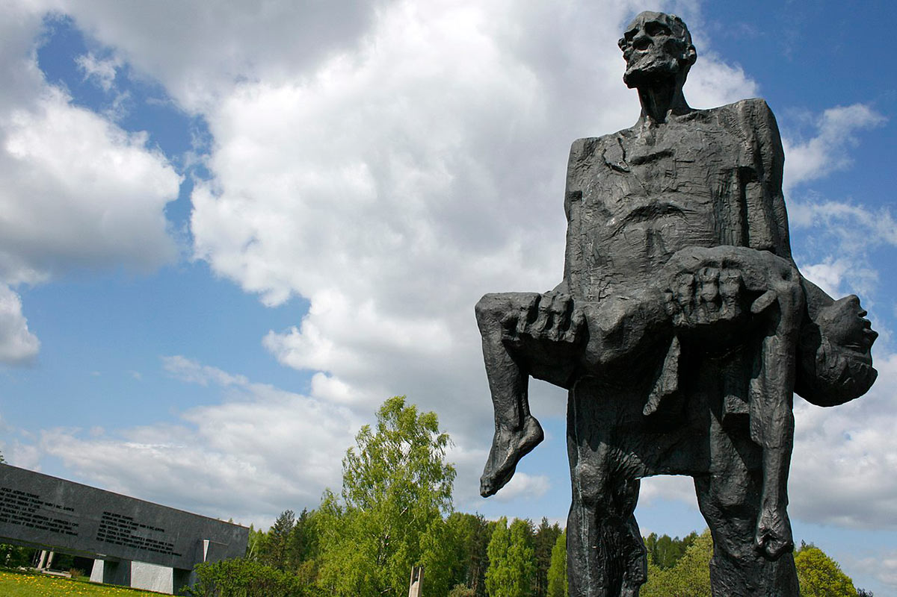
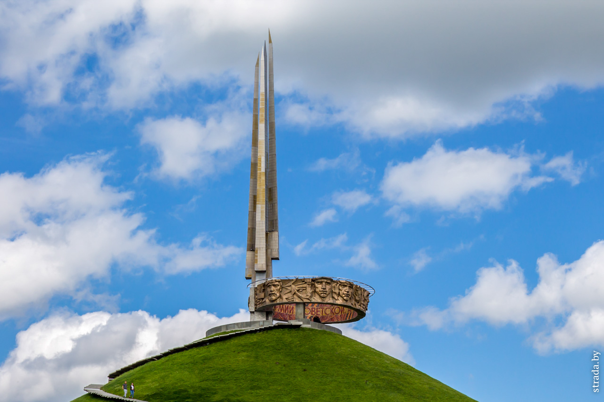
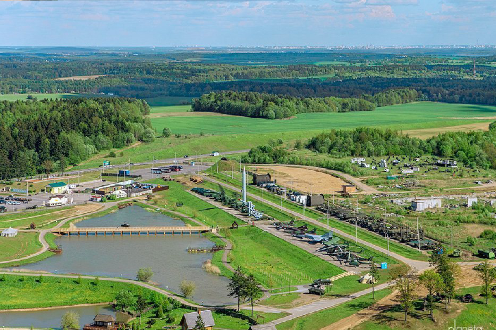
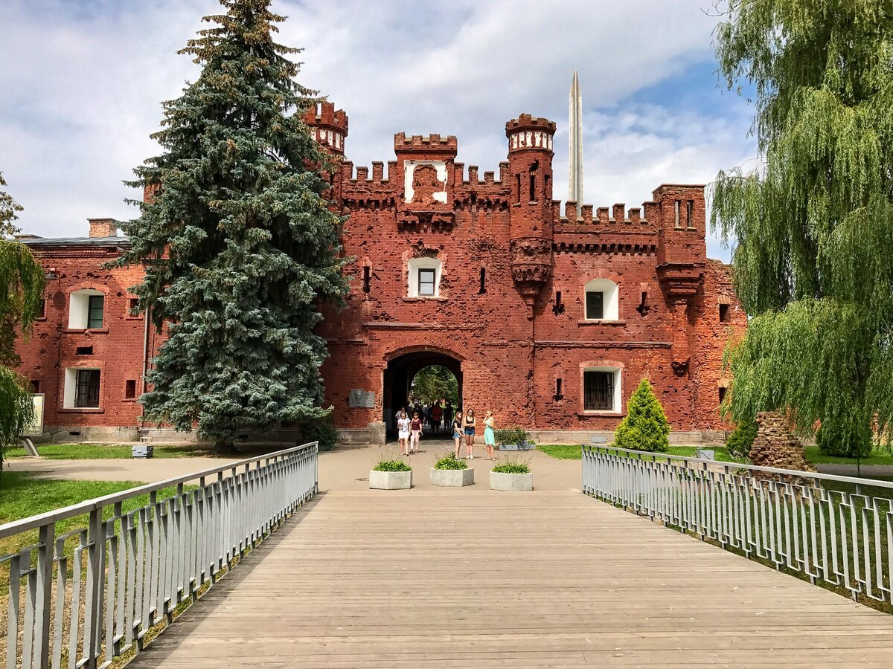

Государственный мемориальный комплекс "Хатынь"

Мемориальный комплекс Хатынь - одно из самых трагических и скорбных мест Беларуси. Он был создан на месте одноименной деревни, которая 22 марта 1943 года была сожжена нацистами вместе со всеми жителями - 149 человек, включая 75 детей. Эта страшная трагедия стала символом геноцида мирного населения, бесчеловечности и жестокости нацистского режима.
Мемориал был открыт в 1969 году, спустя 26 лет после зверской расправы. Центральным элементом комплекса стала скульптурная композиция "Непокоренный человек" - фигура пожилого крестьянина, несущего на руках тело погибшего ребенка. Этот образ олицетворяет безграничную скорбь и непреклонный дух белорусского народа, выстоявшего в годы войны.
Вокруг композиции расположены 26 обелисков, символизирующие 26 сожженных деревень Беларуси. Каждый обелиск увенчан колоколом, чей надрывный звон доносится до посетителей, напоминая о криках замученных жителей Хатыни. Рядом с колоколами установлены имена погибших - эти надписи буквально пронзают сердце, делая трагедию осязаемой и личной для каждого.
Завершает мемориал величественная Стена Памяти, на которой высечены названия более 600 белорусских деревень, уничтоженных нацистами. Именно здесь, у этой стены, посетители отдают дань глубочайшего уважения всем жертвам фашистского геноцида, не забывая о том, какой ценой досталась свобода нашей Родине.
Хатынь - это не просто памятник трагическим событиям Великой Отечественной войны. Это символ несгибаемого духа белорусского народа, его непреклонной воли к победе над нацизмом. Это место скорби и вечной памяти, где каждый человек, преклонив колени, отдает дань уважения
Мемориальный комплекс "Курган Славы"

Мемориальный комплекс "Курган Славы" - один из самых значимых памятников Великой Отечественной войны в Беларуси. Он расположен в 15 километрах от Минска, на месте ожесточенных сражений, вошедших в историю как "Минская операция" 1944 года.
Центральной частью мемориала является величественный 35-метровый обелиск, увенчанный пятиконечной звездой. Он символизирует победу советских войск, освободивших Беларусь от нацистской оккупации. У подножия обелиска находится вечный огонь, который никогда не гаснет, напоминая о бесчисленных жертвах этой страшной войны.
По обе стороны от обелиска расположены две скульптурные композиции, олицетворяющие героизм советских солдат. Один монумент изображает штурмовую группу, прорывающуюся сквозь вражеские заграждения, а другой - воина, поднявшего над головой автомат в знак победы. Эти образы наглядно демонстрируют силу духа и мужество защитников Родины.
Интересно, что "Курган Славы" построен из земли, взятой с 1 418 мест сражений Великой Отечественной войны. Таким образом, в этом мемориальном комплексе нашло воплощение все величие и трагедия военных лет, навсегда запечатленные в скорбной земле Беларуси.
Сегодня "Курган Славы" является одним из самых посещаемых памятников военной истории Республики Беларусь. Ежегодно сюда приезжают тысячи людей, чтобы почтить память павших защитников Отечества и еще раз осознать ту высокую цену, которую пришлось заплатить за свободу и независимость нашей страны.
Историко-культурный комплекс "Линия Сталина"

Оборонительный комплекс "Линия Сталина" - уникальный военно-исторический объект, расположенный недалеко от Минска. Он был создан в 1930-е годы как система укрепленных оборонительных сооружений, призванная защитить западные границы Советского Союза от возможной агрессии.
Когда в 1941 году началась Великая Отечественная война, эти мощные фортификационные сооружения приняли на себя первый удар немецко-фашистских войск. Ожесточенные бои за "Линию Сталина" длились более месяца, но героические советские бойцы сумели нанести серьезный урон наступающим войскам врага.
Сегодня "Линия Сталина" является мемориальным комплексом, который бережно хранит память о тех трагических событиях. Посетители могут своими глазами увидеть сохранившиеся доты, дзоты, противотанковые рвы и другие укрепления, а также ознакомиться с историей их создания и героической обороны.
Центральной частью комплекса является величественный монумент в виде советского флага, поднимающегося из земли. Он символизирует стойкость и несокрушимость духа советских солдат, отстоявших свободу и независимость Родины. Рядом расположен Музей Великой Отечественной войны, где представлены многочисленные артефакты, фотографии и другие экспонаты, связанные с той эпохальной битвой.
Прогуливаясь по территории "Линии Сталина", посетители буквально ощущают дыхание истории, соприкасаясь с живыми свидетелями ожесточенных боев. Здесь каждый камень, каждый оборонительный рубеж хранят в себе память о подвиге советских воинов, готовых пожертвовать своими жизнями ради спасения Родины. Именно поэтому это место является одним из самых важных военно-исторических памятников Беларуси.
Мемориальный комплекс "Бресткая крепость-герой"

Брестская крепость по праву считается одним из самых героических и трагических мест Великой Отечественной войны. Это мощное фортификационное сооружение на западной границе Советского Союза стало первым, кто принял на себя удар немецко-фашистских захватчиков 22 июня 1941 года.
Несмотря на подавляющее численное и техническое превосходство врага, гарнизон крепости оказал ожесточенное сопротивление. Измотанные непрерывными атаками, истекающие кровью, советские солдаты, офицеры и мирные жители сражались до последнего, превратив крепость в неприступную цитадель. Героическая оборона Бреста вошла в историю как символ мужества и несгибаемой воли к победе.
Сегодня на территории Брестской крепости расположен одноименный мемориальный комплекс. Центром композиции является величественный монумент "Мужество" - 30-метровая скульптура советского воина-освободителя, держащего в руках автомат. Этот суровый и вместе с тем скорбный образ как нельзя лучше отражает дух защитников крепости, готовых до последнего вздоха стоять насмерть.
Вокруг главного памятника располагаются другие важные объекты - Холм Славы с Вечным огнем, Цитадель с руинами зданий, Площадь Церквей, где некогда располагались храмы, и многое другое. Каждый из этих элементов несет в себе глубокий символический смысл, являясь немым напоминанием о трагедии и героизме тех, кто защищал родную землю.
Брестская крепость по праву считается одним из самых значимых символов Великой Победы. Ежегодно сюда приезжают тысячи людей, чтобы отдать дань уважения подвигу ее защитников и осознать ту высокую цену, которую пришлось заплатить за свободу нашей Родины.